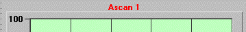

USPC-ActiveX AscanCaptionColor.htm
Version 1.0 19 December 2001
USPC ActiveX component version 1.0
AscanCaptionColor
property

Description:
Returns/Sets the color of
caption
Value:
Color value (RGB)
Samples
Visual
Basic:
‘ Caption is red
Xuspc1.AscanCaptionColor = &HFF

(ActiveX_Caption.gif)